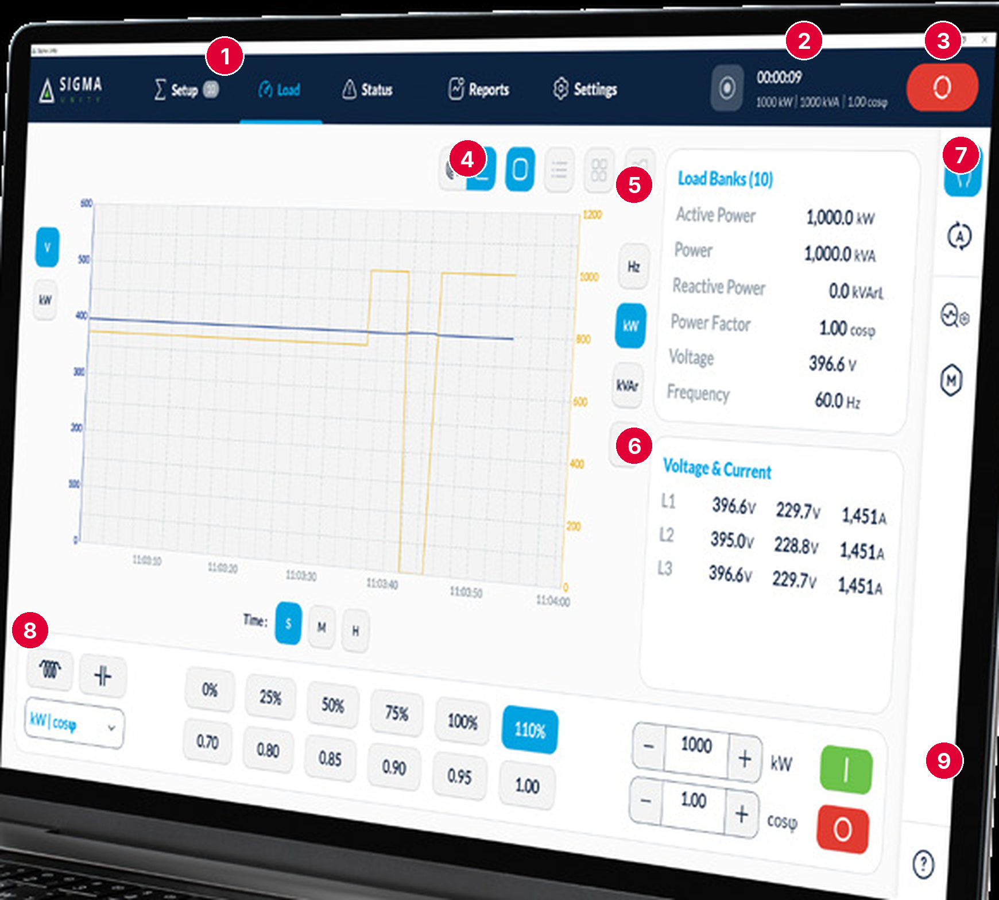
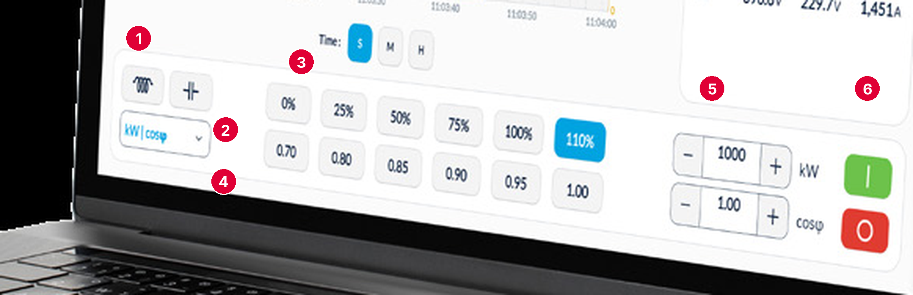

Die Bildschirmansichten und die Bedienelemente auf den Seiten 3 und 4 stammen aus Unterlagen des Herstellers Avtron. Sie sind belegt und tragen die Marke belegt.
Für das Öffnen einer Testdatei und für die Berichtsausgabe gibt es keine öffentliche Bedienungsanleitung. Diese Schritte tragen die Marke vor Ort bestätigen. Sie sind nach dem erwarteten Ablauf beschrieben, nicht nach einem Handbuch. Beim ersten Einsatz prüfen, im Feld eintragen und fotografieren. Daraus wird Rev. 2.
Nichts in dieser Anleitung ist geraten und als Tatsache ausgegeben. Wo eine Angabe fehlt, steht das ausdrücklich dort.
Liest SIGMA Unity die vorhandenen .tst-Dateien aus SIGMA PC?
Die sechs Testprogramme P01 bis P06 für ZRH12 sind im .tst-Format von SIGMA PC geschrieben. SIGMA PC ist abgekündigt, Unity ist der Nachfolger und fasst PC Basic, Network Pro und PC System zusammen. Ob Unity die alten Dateien übernimmt, steht in keiner öffentlichen Unterlage.
Vor der Abreise bei Avtron abklären. customercare@avtronpower.com, +44 1780 480033. Falls Unity die Dateien nicht liest, müssen die Programme in Unity neu angelegt werden. Das ist Arbeit für einen halben Tag, nicht für eine Stunde auf der Baustelle.
| Gegenstand | Anmerkung |
|---|---|
| Laptop mit SIGMA Unity | Version notieren. Stand dieser Anleitung ist V1.04.89. |
| Schnittstelle | SIGMA 2 Lastbänke brauchen ein RS485-USB-Interface. SIGMA LT brauchen ein SIGMA Gateway oder Wireless Gateway. belegt |
| Kabel | SIGMA Mehraderkabel zum Lastbank, USB-Kabel zum Laptop. |
| Testprogramme | P01 bis P06, auf USB-Stick und zusätzlich im Mail-Postfach. |
| Netzanalysator | Fluke mit Energy Analyze Plus, für die unabhängige Zweitmessung. |
| Prüfblatt | Seite 8 dieser Anleitung, ausgedruckt. |
| Punkt | Wert |
|---|---|
| Protokolle | USB, WLAN oder Ethernet |
| Maximale Steuerdistanz | 1000 m. Mehr über Lichtwellenleiter, SIGMA Gateway oder TCP/IP. |
| Anzahl Lastbänke | über 100, abhängig von der Verbindungsart |
| Arbeitsgrössen | kW, kVA, kVAr und Prozent Last |
| Berichtsausgabe | PDF oder .txt |
Bei SIGMA PC musste die COM-Port-Nummer kleiner als 10 sein, sonst fand die Software den Lastbank nicht. Das stand ausdrücklich im Kurzanleitung des Herstellers. Ob das für Unity noch gilt, ist nicht belegt. Wenn Unity beim Start keine Lastbänke findet: im Gerätemanager unter Anschlüsse die Nummer des USB Serial Port prüfen und bei Bedarf auf eine Nummer unter 10 ändern. vor Ort bestätigen

Das rote O oben rechts (3) und das rote O unten rechts (9) nehmen beide die Last weg. Vor dem ersten Lastaufschalten zeigen und dem zweiten Mann sagen, wo sie liegen. Wer sie erst sucht, wenn der Generator in die Knie geht, sucht zu lange.

| Menü | Wofür | Beleglage |
|---|---|---|
| Setup | Daten des Prüflings eintragen, Lastbänke suchen, benennen und gruppieren. Die Zahl im Kreis zeigt die erkannten Bänke. | vor Ort bestätigen |
| Load | Der Arbeitsplatz während des Tests. Last stellen, anlegen, abwerfen, Messwerte und Kurve lesen. | belegt |
| Status | Zustand und Störungen der verbundenen Lastbänke. | vor Ort bestätigen |
| Reports | Berichte. Hersteller nennt Basic, Summary, Transient und Heat Run. Ausgabe als PDF oder .txt. | vor Ort bestätigen |
| Settings | Grundeinstellungen der Software. | vor Ort bestätigen |
Der Hersteller nennt in den Unity-Tutorials die Themen Automatic Load Control und Scripting Basics und führt als Merkmale in-built load test templates, automatic load testing with data capture und create custom scripts and save for repeatable load testing. Der automatische Lauf wird daher über den Steuermodus A in der senkrechten Leiste rechts erwartet (Seite 3, Marke 7). vor Ort bestätigen
Aufzeichnung vor Laststart. Supply on Test vor Programmstart. Programm prüfen vor dem ersten Schaltbefehl. Kühllauf am Ende abwarten, bevor die Lüfter stehen.
Reihenfolge einhalten. P01 zuerst, das Ergebnis entscheidet über die Einstellung von P02.
| Nr. | Programm | Dauer | Zweck und was abzulesen ist |
|---|---|---|---|
| P01 | Step Timing Diagnostic | 5 min 08 s | Misst die tatsächliche Schrittzeit des Lastbanks. Drei Blöcke über die gleiche Spanne 187 bis 1500 kW. Ablesen: Zeit je Block, daraus der Overhead je Schritt. Diese Zahl steuert P02. |
| P02 | Cold Start Ramp Acceptance | 4 min 25 s | Die vertraglich geforderte Rampe 187 auf 2298 kW in 30 s. Allein gefahren, damit die Zeit zwischen zwei stabilen Plateaus ablesbar ist. Ablesen: Rampenzeit. |
| P03 | Ramp and L3 Transients | 16 min 59 s | Der volle Lauf: Rampe, Hauptplateau 2721 kW über 180 s, L3-Lastsprünge, thermischer Referenzschritt. Ablesen: Leistung bei 0 s und bei 180 s des Plateaus, Spannungs- und Frequenzeinbrüche bei jedem Sprung. |
| P04 | Overshoot and Thermal | 30 min 30 s | Drei Haltephasen à 300 s bei 2750 kW. Trennt Kabelverlust von Elementtemperatur. Ablesen: Leistung bei 0 s, 60 s und 300 s jeder Haltephase. |
| P05 | Step Load ISO 8528-5 | 35 min 42 s | Lastaufschaltung und Lastabwurf nach Norm, in Blöcken von 25 Prozent. Ablesen: Spannungs- und Frequenzeinbruch, Erholzeit, Überschwingen beim Abwurf. Leistungsklasse vorher im Projekt klären. |
| P06 | Full Load Heat Run | 157 min 10 s | Dauerlauf 25 / 50 / 75 Prozent je 30 min, dann 100 Prozent über 60 min. Ablesen: je Block am Anfang, in der Mitte und am Ende kW, kVA, cos φ, Spannung und Strom je Phase, Frequenz, Kühlwasser- und Abgastemperatur, Öldruck, Tankstand. |
Widerstandselemente haben einen positiven Temperaturkoeffizienten. Ein kalter Lastbank zieht beim gleichen Sollwert mehr Leistung. Am 9. November wurden auf GEN-1A im selben Lauf 2926 kW auf dem ersten kalten Plateau gegen 2804 kW auf einem späteren warmen Plateau gemessen, eine Differenz von 122 kW oder 4,2 Prozent. Blockwert immer am Ende des Blocks nehmen, nie am Anfang. Zustand des Lastbanks, kalt oder warm, im Prüfblatt vermerken.
P02 und P03 halten vor der Rampe 17 Sekunden auf 187 kW. Das ist Einschwingzeit und gehört nicht in die Rampenmessung.
Cursor 1 auf das letzte Sample des 187-kW-Plateaus, also unmittelbar vor dem ersten Rampenschritt. Cursor 2 auf das erste Sample des 2298-kW-Plateaus. Wer Cursor 1 an den Anfang des Plateaus setzt, misst 17 Sekunden zu viel und die Rampe fällt scheinbar durch, obwohl sie hält. Genau diese Verwechslung steht hinter der Beanstandung von 47 Sekunden.
P02 ist auf 29,9 s gegen eine Forderung von 30 s eingestellt. Das sind 0,1 s Reserve. Die Rampenzeit folgt aus
Rampenzeit = 16 × Overhead + 15 s + n (n = Anzahl der Delays mit 2 s)
Zuerst P01 fahren, den Overhead ablesen, dann n nach dieser Tabelle setzen:
| Gemessener Overhead je Schritt | n | Erwartete Rampenzeit |
|---|---|---|
| bis 0,62 s | 5 (wie ausgeliefert) | 29,0 bis 29,9 s |
| 0,63 bis 0,68 s | 4 | 29,1 bis 29,9 s |
| 0,69 bis 0,74 s | 3 | 29,0 bis 29,8 s |
| 0,75 bis 0,80 s | 2 | 29,0 bis 29,8 s |
Die 2-s-Delays von hinten herausnehmen: zuerst Schritt 14, dann 11, dann 8. So bleibt der Anfang der Rampe unverändert.
Abbruch: rotes O drücken, Last ist weg. Lüfter weiterlaufen lassen, bis die Elemente abgekühlt sind. Erst dann abstellen.
Den Fluke parallel mitlaufen lassen. Die Kurve des Netzanalysators ist die Messung, die der Kunde anerkennt. Die Anzeige des Lastbanks ist der Sollwert, nicht der Nachweis. Bei der Beanstandung vom 16. November war genau diese Trennung der Punkt.
| Feld | Eintrag |
|---|---|
| Datum und Uhrzeit | |
| Generator | |
| Gefahrenes Programm | |
| Unity-Version | |
| Zustand Lastbank | kalt / warm / durchgewärmt |
| Overhead aus P01 | s je Schritt daraus n = |
| Gemessene Rampenzeit | s gegen 30 s gefordert |
| Techniker |
| Punkt | Was dafür gebraucht wird |
|---|---|
| Liest Unity die .tst-Dateien aus SIGMA PC? | Antwort von Avtron, schriftlich |
| Klickweg zum Öffnen eines Testprogramms | Bildschirmfoto des Steuermodus A und des geöffneten Programms |
| Seite Setup, Eingabe Supply on Test | Bildschirmfoto |
| Seite Reports, Ausgabe als PDF | Bildschirmfoto |
| Gilt die COM-Port-Grenze unter 10 noch? | Prüfen beim ersten Verbinden |
Beim ersten Einsatz von jedem Schritt mit der Marke vor Ort bestätigen ein Bildschirmfoto machen und den tatsächlichen Klickweg notieren. Damit wird Rev. 2 erstellt, und danach steht in dieser Anleitung nichts mehr, was erst noch zu bestätigen wäre.
Quellen. Bildschirmansichten und Leistungsmerkmale: Avtron SIGMA Unity Broschüre, Publikation 5196, und Produktseite SIGMA Unity, abgerufen am 17.11.2026. Verbindungsarten, Reichweite und Anzahl Lastbänke: Fragen und Antworten derselben Seite. COM-Port-Hinweis: Avtron SIGMA PC Software Quick Start Guide, Publikation 5164. Thermische Werte und Beanstandung: eigene Messungen vom 9., 10. und 16. November 2026. Testprogramme P01 bis P06: Mobil in Time AG. Support Avtron: customercare@avtronpower.com, +44 1780 480033.